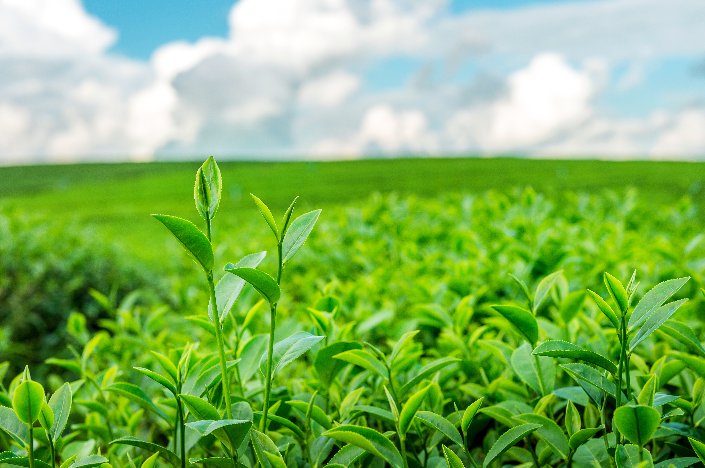
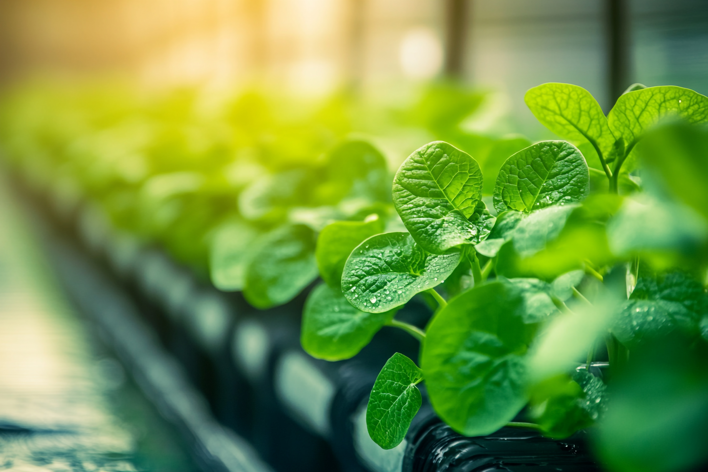

Pest Control Strategies
Learn modern pest management strategies, biological control methods, and integrated agricultural protection techniques for healthier and more productive farming.
Early Detection & Monitoring
Identify agricultural pests early using monitoring systems and preventive observation techniques.

Crop Inspection
Regular field inspections help identify early signs of pest infestations and crop damage.
See More
Monitoring Systems
Modern monitoring tools improve pest detection accuracy and support timely agricultural decisions.
See More
Pest Identification
Correct pest identification helps farmers apply appropriate prevention and treatment methods.
See MoreEffective Treatment & Biological Control
Explore eco-friendly pest treatment techniques and sustainable agricultural protection methods.
Organic Treatments
Organic pest control solutions reduce chemical dependency and improve environmental safety.
See MoreBiological Control
Beneficial insects and natural predators help control harmful agricultural pests effectively.
See More
Disease Prevention
Preventive agricultural practices help reduce crop diseases and pest-related productivity losses.
See MoreIntegrated Pest Management (IPM) Techniques
Integrated Pest Management (IPM) is an ecosystem-based strategy that focuses on long-term prevention of pests through a combination of techniques, using pesticides only as a last resort when other methods are insufficient.
Cultural Controls
Modifying crop production systems to suppress pests, such as crop rotation, intercropping, selecting pest-resistant varieties, and adjusting planting times or spacing.
See MoreBiological Controls
Utilizing natural enemies like predators, parasitoids, and pathogens; this includes conservation biocontrol (supporting existing beneficial insects) and augmentation biocontrol (releasing external natural enemies).
See More
Chemical Controls
Applying biopesticides or selective, reduced-risk pesticides judiciously, ensuring they target specific organisms while minimizing harm to non-target species and the environment.
See More